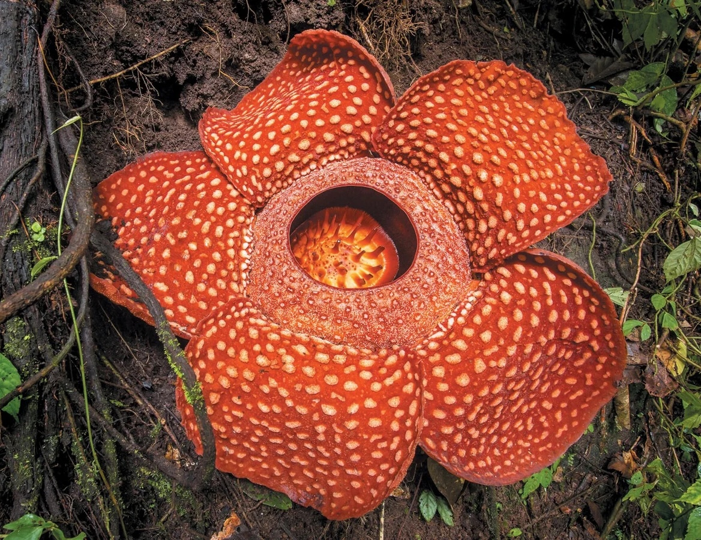

Height: 39.6 in
Origin: Rainforests of Sumatra and
Borneo
Requirements: Needs to grow in
undisturbed rainforests, as its survival
is completely dependent on the Tetrastigma,
a particular vine attached to the
flower to obtain water and nutrients.
Lifespan: November, December, and January